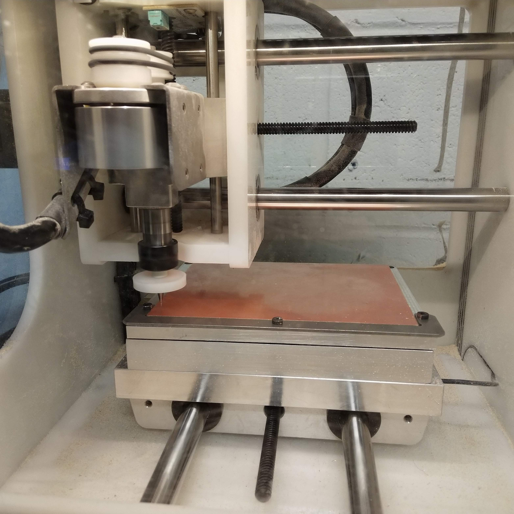

In 2018, I was hired as one of 3 interns at Busek, a small company that makes electrical propulsion systems for spacecraft and other similar systems. My time at Busek was was split between working with the Design Group and the Electrical Group.
In the design group, I primarily worked with Solidworks and Solidworks PDM to complete a variety of tasks. Initially, I started off doing some relativley simple reformating of a group of engineering drawrings to conform to the companies current design standards. Throught the summer, the work got more involved. Many of my tasks ivolved revising parts, assemblies, and drawrings to improve manufacturability. I often worked with other engineers and vedors to solve these problems. Some other tasks I did included doing inventory managment in Excel and building an electrical filter.
Before coming to Busek, I had never taken any electrical courses beyond introductory physics. Despite this, I was able to learn a lot from a variety of sources in order to contribute. My work there primarily focused on Printed Circuit Board (PCB) prototyping.
The Electrical Group had a small desktop CNC machine on which I learned how to CNC mill double and single sided circuit board. I also setup a easy method for applying soulder mask and tinning the pads to create finished boards. After finishing this, I created detailed procedures to guide other engineers through the entire process from gerber files to finished PCB. My efforts helped to accelerate the prototyping process allowing.
FR1 blank fixtured using the vacuum chuck.
One of the issues with CNC mill was that the only fixturing option we had for the FR1 blanks was double sided tape. This was time consuming to apply and often lead to warping when trying to remove it which was problematic for 2 sided boards. After doing some research, I proposed creatinga vacuum chuck, a plate which fixtures the blank using vacuum force. After going through several iterations of design, I manufactured the design out of aluminum which I machined on the CNC itself. Once installed on the mill and connected to a shop vacuum, the FR1 blanks could be easily positioned with the built in alighnment bracket and fixtured by turning the vacuum on. This is quicker and essier than using double sided tape, wastes no materials, and doesn't damage the board. Last I heard, it is still in use and has made working with the mill much essier.
One of the other two interns was working on a current meter specifically designed for some hardware tests other engineers needed to run. I was assigned to create an desktop program to interface with it. I wrote a bit of C++ on the firmware side to send the data that was read over ethernet. From there, I created a desktop application in Python to read the data and display it in real time. The gui library used was Tkinter along with Matplotlib for graphing. Multithreading was used to manage the receiving of data from the current meter while simsimultaneously graphing it. The program also had some other featuers such as the ability to export data, compute linear regressions on the graph, and detect times of interest.